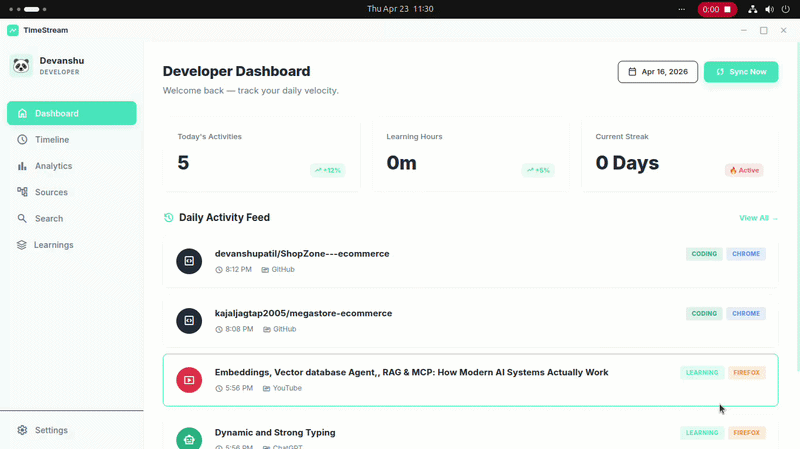

TimeStream runs silently in your system tray and automatically logs every meaningful developer activity — no manual input, no timers, no friction. Just open your laptop and your day gets recorded.

You code for hours. You watch tutorials. You chat with AI. You browse GitHub. But at the end of the week — can you actually remember what you did? Most developers have zero visibility into their own habits. You can't improve what you can't measure.
Tools like RescueTime upload your private codebase activity, browsing data, and terminal commands to remote servers you don't control.
WakaTime, Toggl, Clockify all lock their most useful features behind $10–$20/month plans that don't justify the value.
Nobody actually remembers to clock in and out. Manual tracking is inconsistent, inaccurate, and adds cognitive friction to your flow.
Every design decision in TimeStream is driven by what developers actually need.
Install once and forget it. TimeStream runs silently in your system tray, capturing everything automatically without interrupting your flow.
Every byte of your data stays on your hard drive. No cloud sync, no remote analytics, no third-party servers. TimeStream can never see your data.
Natively parses Claude Code & OpenCode terminal sessions to surface exactly what files you changed, how long you worked, and how many errors were fixed.
Oceanic Dark/Light modes, live dynamic CSS accent colors, streak gamification, and personalized emoji developer profiles.
TimeStream captures your full developer workflow across every tool you use — automatically.
| 🎬 YouTube | Educational videos (smart AI filter) |
| 🐙 GitHub | Repos, PRs, issues, commits |
| 🤖 ChatGPT | Your conversation topics |
| 🧠 Claude AI | Your AI prompts & sessions |
| 🔍 Perplexity | Research queries |
| Tech & programming posts |
| ⚡ OpenCode | Coding sessions + duration |
| 🤖 Claude CLI | Agent conversations |
| 📊 Learning time | Exact minutes spent learning |
| 🔥 Daily streaks | Consecutive active days |
| 📈 Weekly patterns | Your peak productivity hours |
Most tracking apps log everything. TimeStream uses a multi-signal scoring algorithm to decide if a YouTube video is actually educational before logging it.
TimeStream covers your full developer workflow from a beautiful dashboard to deep AI session intelligence.
See your weekly and monthly activity bar chart. Find out which category consumes most of your time — Coding, Learning, Research, or DevOps. All from real data, zero guesswork. Includes daily goal progress and streak counters.
A chronological feed of everything you did, hour by hour. Filter by category. Click any card to re-open the source. Think of it as your personal developer logbook — automatically written for you every day.
TimeStream imports your OpenCode and Claude CLI sessions — including project context, conversation summaries, session duration, files modified, and errors fixed — into a dedicated Learnings view. No other time tracker does this.
Instantly search across your entire history. "What was that React tutorial I watched last week?" — found in milliseconds. Full-text search across titles, categories, and sources.
Oceanic Dark & Light modes. Live dynamic CSS accent color injection — choose from Teal, Blue, Violet, Rose, or Amber. Personalized emoji developer profile with name, role, and avatar selector. All persisted instantly via localStorage.
All data lives on your machine. There is no server. No cloud. No tracking. No accounts. TimeStream can never see your data. The local Node.js server is only accessible from your own machine at localhost:3000.
A clean, local-first data pipeline engineered for reliability and privacy.
The custom Chrome (Manifest V3) and Firefox extension silently monitors your tabs. It applies a smart 3-minute rule and content scoring algorithm before logging anything — noise is filtered out automatically.
chrome-extension/ · firefox-extension/The extension securely POSTs activity data to localhost:3000 — a lightweight HTTP server running
inside Electron. Only your machine can reach it. Full CORS protection applied.
An async write-queue deduplicates and safely writes all data to a local JSON file, preventing corruption under heavy concurrent I/O load. Activities are capped at 1,000 entries with smart deduplication.
~/.config/TimeStream/activities.jsonA Node.js fs.watch() observer monitors your OpenCode
and Claude CLI session directories in real-time, parsing raw JSON logs into structured
session cards automatically.
All data is visualized across the Dashboard, Timeline, Learnings, Analytics, and Search pages — built with Vanilla JS and dynamic CSS variable theming via Electron IPC.
Electron IPC · renderer/index.htmlCarefully chosen for reliability, performance, and zero-friction developer experience.
GitHub Actions handles automated testing, extension packaging, and release creation on every version tag push.
TimeStream is actively developed. Here is what's on the horizon.
TimeStream runs on Linux (Ubuntu 20.04+ recommended) and requires Node.js v18+ and npm v8+.
Make sure you have Node.js v18+, npm v8+, and build tools installed.
sudo apt install build-essential
git clone https://github.com/[your-repo]/TimeStream.git cd TimeStream npm install && npx @electron/rebuild
npm run dev
Chrome: Go to chrome://extensions → Enable Developer Mode → Load
Unpacked → select chrome-extension/
Firefox: Go to about:debugging → This Firefox → Load Temporary Add-on →
select firefox-extension/manifest.json
TimeStream is now active. Open GitHub, watch a tutorial, chat with AI — your timeline will populate automatically within minutes.